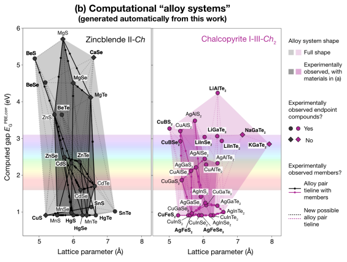
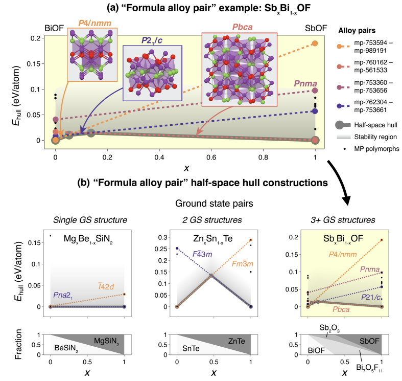

過去の注目論文：マテインフォ
論文紹介TOP < 物性物理 | 材料工学 | マテインフォ | その他
マテインフォ：気になった論文一覧（随時更新中）
ピックアップ論文
1. 結晶合金の可調整な物性を計算的にスクリーニングする方法
・既存の材料データベースから、結晶構造が類似している化合物の組み合わせを自動的に探索し、可能な合金や固溶体を提案するフレームワークとオープンソースコードを開発した。
・Materials Projectデータベースにこのフレームワークを適用し、60万以上のユニークな「合金ペア」や1万以上の「合金系」を作成し、公開した。これらのデータは、物性の可調整性を探索するために利用できる。
・合金ペアや合金系の可視化や分析のために、新しい手法を提案した。例えば、半空間ハル法を用いて、合金の熱力学的安定性や相変化を推定したり、格子定数やバンドギャップなどの物性をプロットしたりした。
・このフレームワークを応用して、p型透明導電体として有望な合金候補をスクリーニングした。その結果、従来の化合物スクリーニングでは見逃されていた可能性のある新しい候補を発見した。
コメント：学部生の時にp型透明超伝導体の探索研究をしていたが、このようなデータベースでの予測を基に、材料研究が出来ていたらもっと深く研究できたのではないかと思う。
DATE: 10 Apr 2023 (v3), 21 Jun 2022 (v1)
A method to computationally screen for tunable properties of crystalline alloys
Rachel Woods-Robinson et al. (University of California at Berkeley, USA)
arXiv:2206.10715 (cond-mat.mtrl-sci)
 
随時更新中
#ChatGPTによる要約と追加コメントを記述